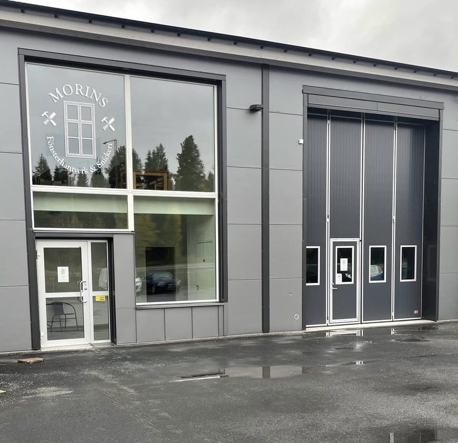

Om mig
Jag heter Robin Morin och driver Morins Fönsterhantverk & Snickeri i Östersund. Jag tog examen som fönsterrenoverare vid Hantverkslärling i Leksand 2018 och har sedan dess drivit min egen verkstad här i Jämtland. Under utbildningen lärde jag mig både att renovera och att tillverka fönster från grunden — ett hantverk som jag nu byggt min verksamhet kring.
Mina värdegrunder
Min utgångspunkt är att själv kunna säkra högsta kvalitet från början till färdig produkt, i alla led. Jag väljer med omsorg ut det finaste virket, jag lägger ned min själ i skapandet och jag målar med bra beprövad färg som kommer ifrån naturen. Det är så man alltid gjort. Det är hållbart på riktigt.
Så arbetar jag
För mig handlar fönsterrenovering om omsorg — om ditt hus, om materialet och om det hantverk som pågått i generationer före mig. Jag tar mig tid att göra saker ordentligt, för ett fönster som är välgjort och välskött håller mycket länge.
I verkstaden arbetar jag med både renovering av befintliga fönster och tillverkning av nya i gammal stil. Oavsett uppdrag är målsättningen densamma: resultatet ska bli något du är nöjd med i många år framöver.
Var finns jag?
Min verkstad ligger i Östersund i Jämtlands län. Jag tar uppdrag i hela Jämtland och ungefär tio till femton mil ut i varje väderstreck — då blir restiden fortfarande rimlig för både dig och mig. Hör gärna av dig oavsett var du bor, så ser vi om vi kan hitta en lösning.
